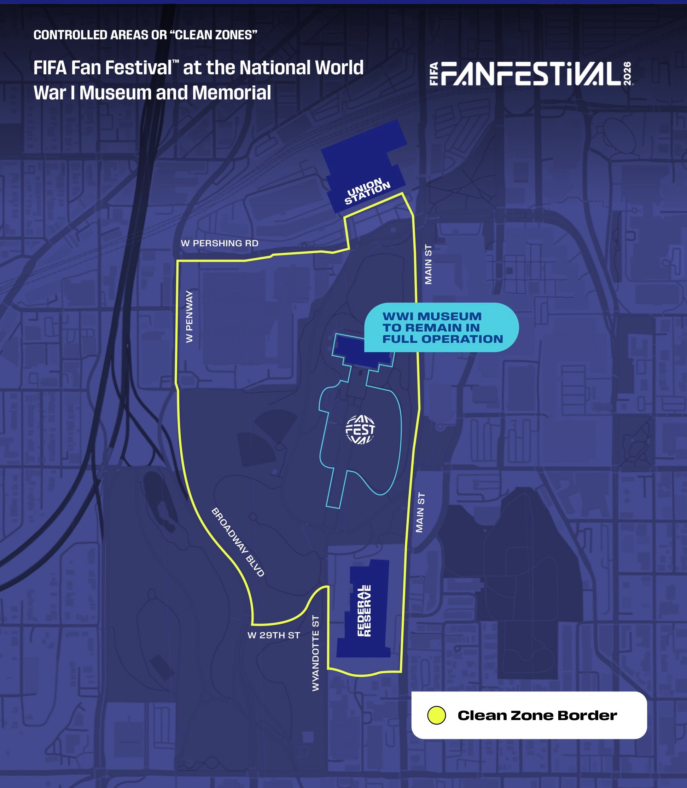

|
New Haven SDA Church Walkin cooler on South side |
|---|
| May 16, 2026 Sabbath 2-4pm |
| May 17, 2026 Sunday 10-11am |
| May 23, 2026 Sabbath 2-4pm |
| May 24, 2026 Sunday 10-11am |
| May 30, 2026 Sabbath 2-4pm |
| May 31, 2026 Sunday 10-11am |
| June 6, 2026 Sabbath 2-4pm |
| June 7, 2026 Sunday 10-11am |
| June 13, 2026 Sabbath 2-4pm |
| June 14, 2026 Sunday 10-11am |
| June 20, 2026 Sabbath 2-4pm |
| June 21, 2026 Sunday 10-11am |
| June 27, 2026 Sabbath 2-4pm |
| June 28, 2026 Sunday 10-11am |
| July 4, 2026 Sabbath 2-4pm |
| July 5, 2026 Sunday 10-11am |
|
New Haven Seventh Day Adventist Church 8714 Antioch Road Overland Park, Kansas 66212 |
